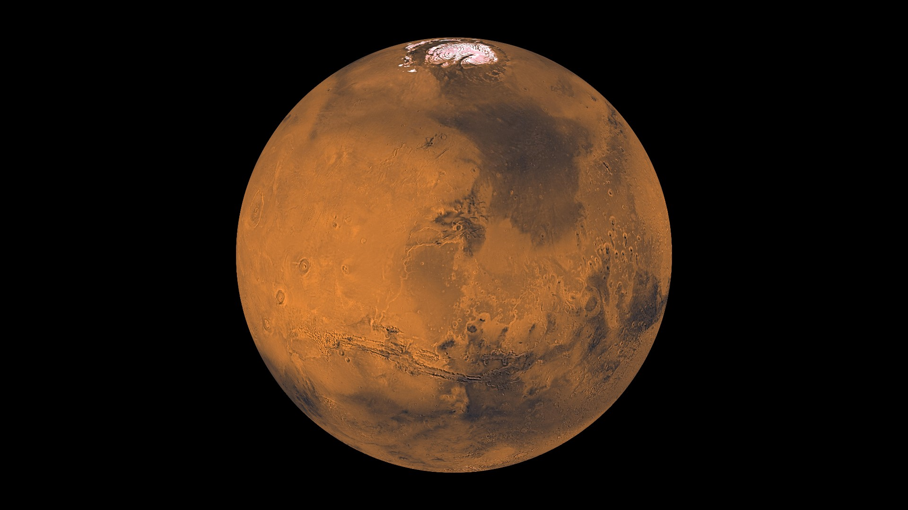
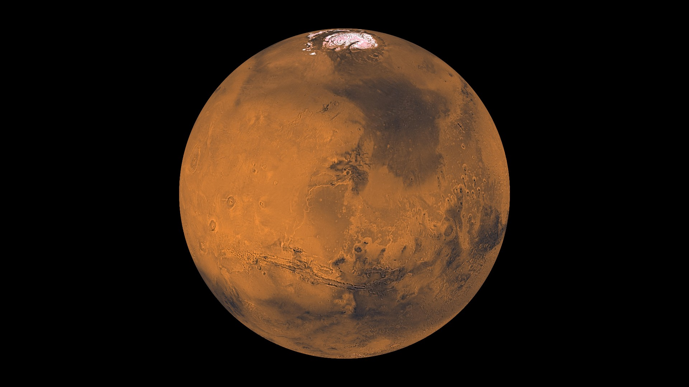

Planet:
Mercury
*On Mercury you weigh only 38% of what you weigh on Earth.
* Fastest orbiting planet
* Planet nearest to the sun
* One side of the planet can be 800 degrees Fahrenheit when the other can be -280 degree Fahrenheit at the same time.
Planet:
Venus
* On Venus you weigh only 91% of what you weigh on Earth.
* Venus has 90 times the pressure of Earth
* Venus has volcanoes like Earth
* Rotates in the opposite direction of Earth.
Planet:
Earth
* 23 hours and 56 min=1 Earth day (rotation)
* 365 days =1 Earth year (revolution)
* Temperature is between –13 degrees Celsius and 37 degrees Celsius
Planet:
Mars
* Air Pressure on Mars is the same as 30 km above the Earth’s surface
* Mars is in the form of ice.
* Evidence that water was there at one time
* Volcanic history like Earth.
Planet:
Jupiter
* Largest planet in the Solar System
* Has a Great Red Spot from a storm system that is more than 400 years old (It is larger than Earth!)
* 9 hours and 54 min=1 Jupiter day (shortest day)
* Pressure is so great it would crush a spaceship.
Planet:
Saturn
* 2nd Largest planet in the Solar System
* 95 times more massive than earth.
* Saturn has the largest rings of any planet, the rings are made of icy particles.
* Most moons of any planet.
Planet:
Neptune
* Discovered in 1846
* Neptune has visual belts of clouds
* Interior releases thermal energy to its outer layers.
* Use to be the 8th planet after Pluto until 1999.
 
